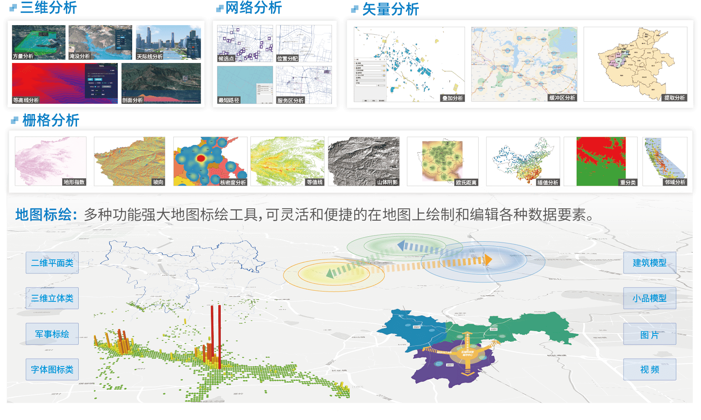

运用专业的空间分析工具，对地理数据进行深度分析，提取有价值的信息
我们运用专业的空间分析工具，对地理数据进行深度分析，提取有价值的信息。空间数据分析是GIS系统的核心功能之一，能够为客户提供科学的决策支持。
我们的空间分析服务包括缓冲区分析、叠加分析、网络分析、地形分析等多种分析方法，能够满足不同客户的需求。
我们的空间数据分析服务广泛应用于城市规划、环境监测、交通管理、国土资源等领域，为客户的决策提供科学依据。

使用专业的空间分析工具，确保分析结果的准确性。
提供多种空间分析方法，满足不同客户的需求。
生成详细的分析报告，为决策提供科学依据。
为客户提供科学的决策支持，帮助客户做出正确的决策。